ガイアスロード （オレンジハウスソフトウェア）
発売：１９９３年 メディア：ＰＣ−９８
最終更新日 2009.06.09
−概要＆感想−
主人公のゼニスは、借金取りに追われて旅をしていた。とある村にたどり着いた彼は、その村で暴れていた男を止めに入り、数時間の格闘後、取り押さえることができた。しかし、その際にいくつかの家や家畜小屋を壊してしまい、村人から総スカンを食ってしまう。治療のためつれてこられた村長の家で、村長から、村はずれの旧魔法時代の古い遺跡のせいで、村の若い娘たちが数人行方不明になっているという話を振られる。その遺跡を調べて問題を解決し、いなくなった娘たちを助け出してくれれば今回の事はなかったことにしよう…という半ば脅迫に近い依頼を受け、主人公は不本意ながらも、未知の迷宮に挑むこととなった…というストーリーの迷宮探索型ロールプレイング＋パズル＋アクションゲーム。
迷宮のあちこちにブロックが置かれていて、パズルゲームの名作「倉庫番」のノリで動かして鍵や宝箱を取るというゲームシステムがなかなか面白い。全部で８ステージあり、各ステージは３面の通常ステージとボスキャラ戦で構成されている。ボスキャラ戦はアクションゲームになっていて、そのボスキャラに勝つと塔にとらわれている女の子のエッチなＣＧを見ることができる。また、ステージの所々に女の子がいるみたいであるが、こちらのＣＧを見るのは至難の業（私は２キャラしか見ることができなかった…。下に記載している「くべゆり」さんは更に何人かを見つけているとのことです）。あさのさんの描くキャラが相変わらず可愛い。
ストーリーは取って付けたようなものであるので印象も何もないが、ラストシーンがあまりにもムナしすぎるので、もう少し色っぽくして欲しかった。可愛いキャラデザの女の子ばかりだったのに、あれじゃあバッドエンドみたい…（笑）
−詳細攻略−
【 留意すべき事項 】
・迷宮の中にいるモンスターであるが、倒しても経験値が手に入る訳ではないので、避け得る敵なら避けてしまったほうがＨＰの節約になる。
・ステージ６−１にある宝箱は開けるとダメージを受けるのがあるので注意する。ちなみにこの宝箱以外のヤツは全てトラップなので開けてはならない。
・ステージ後半で出てくるウィルオーウィスプ（人魂？）は、こちらのキャラを見かけると一目散に向かってくるので、壁の向こう側にいるうちに魔法の「ＷＩＮＤ ＣＵＴＴＥＲ」で倒しておけば楽。
・ボスキャラには魔法の「ＧＲＯＵＮＤ ＢＡＬＬ」が非常に有効なので（序盤のボスキャラ程度だと一撃で沈む）、通常マップは拡散系の「ＷＩＮＤ ＣＵＴＴＥＲ」や「ＴＨＵＮＤＥＲ」を用い、ＧＲＯＵＮＤ ＢＡＬＬはボスキャラ用に残しておく。直線系の「ＳＴＡＲ ＤＵＳＴ」は８−２面などの長い回廊で有効。
・ラストの魔導師は魔法を撃ってくるわ、嫌らしい動きのウィルオーウィスプを出してくるわで、まともに正対すると手をつけられない。が、戦闘開始直後に「ＴＩＭＥ ＨＯＬＤ」で時間を止めて、「ＧＲＯＵＮＤ ＢＡＬＬ」を魔導師の目の前に打ち込んでやればあっという間に勝てる（笑）
・アイテムの中に「ＭＡＴＴＯＣＫ」というブロックを崩せるものがあるが（そう言えば昔ザナドゥというファルコムのゲームで似たようなのがあったな…）、ゲーム中２個手に入れることができる。このうち一つはステージ８−３にある鍵の前のブロックに使うと便利なのでキープしておけば吉。
・余談であるが、ステージ５−３のこの宝箱（中身はＳＴＲポーション）を、ＭＡＴＴＯＣＫ無しではどうやっても開けられないような気がするんですけど、誰かブロックの動かし方を知っている方がいればご一報お願いしますm(__)m
・なんと、２００９年になって「くべゆり」さんという方からこの「ステージ５−３」の攻略情報をいただけました！ １５年来の謎（笑）が氷解して感謝感激です！！ なるほど、石を半分だけずらすというテがあったんですねぇ。くべゆりさんにはこの場をお借りして深く感謝申し上げますm(_ _)m
その攻略法とは・・・（くべゆりさんから許可を得て転載しました）
ステージ５−３の宝箱の取り方
下の図の１から８の手順で取ることができます。
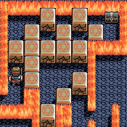 |
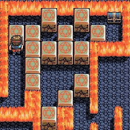 |
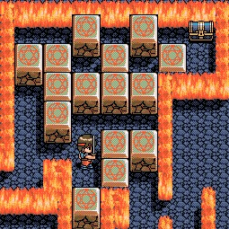 |
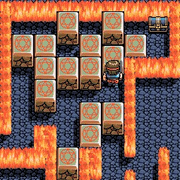 |
| １ |
２ |
３ |
４ |
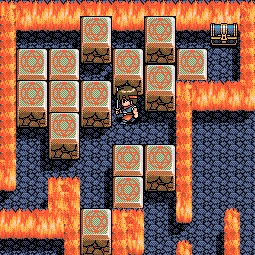 |
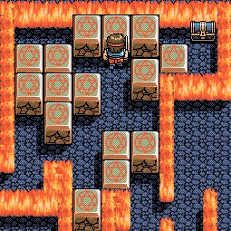 |
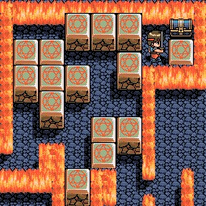 |
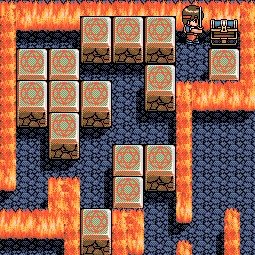 |
| ５ |
６ |
７ |
８ |
隠しキャラの位置
ステージ１−２、２−２、３−２、４−２で発見しました。
５−２、６−２･･･でも探したのですが、発見できませんでした。
これで全部なのかは確認できていません。
マップ上で主人公のいる位置に隠しキャラがいます。
※マップをクリックすると拡大した画像が表示されます
【 ステージ１−２ 】
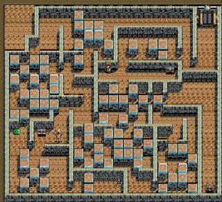
【 ステージ２−２ 】
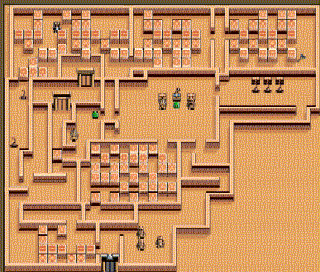
【 ステージ３−２ 】
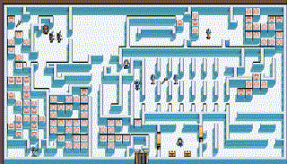
【 ステージ４−２ 】
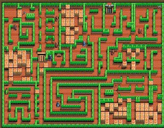
・・・という攻略情報を頂けました！
（参考文献）
・なし
リストへ戻る